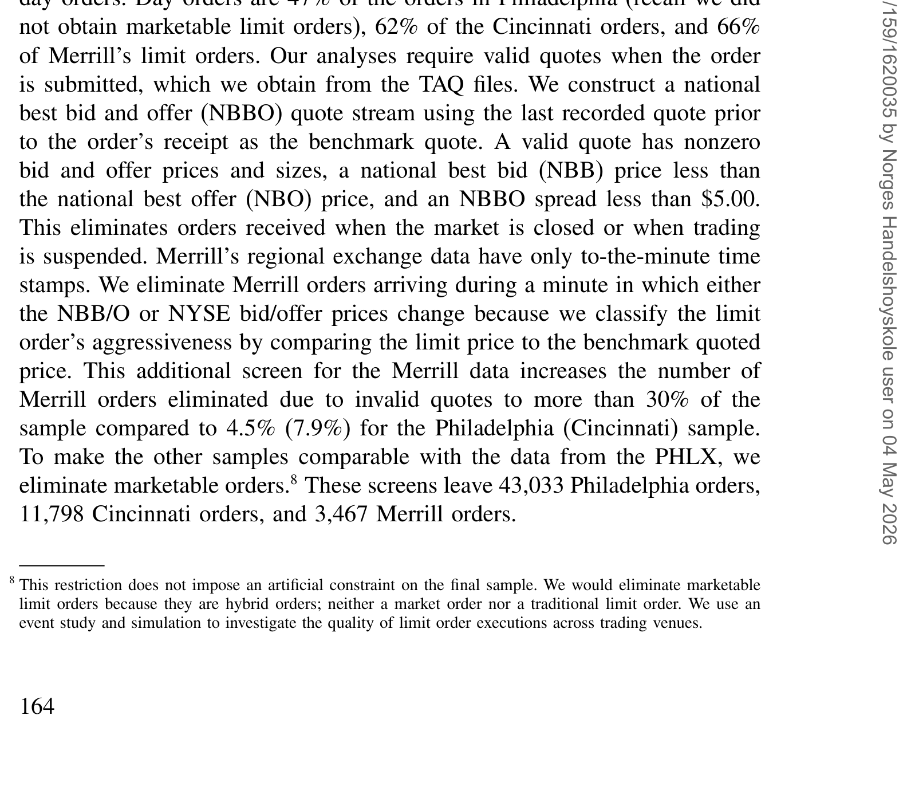
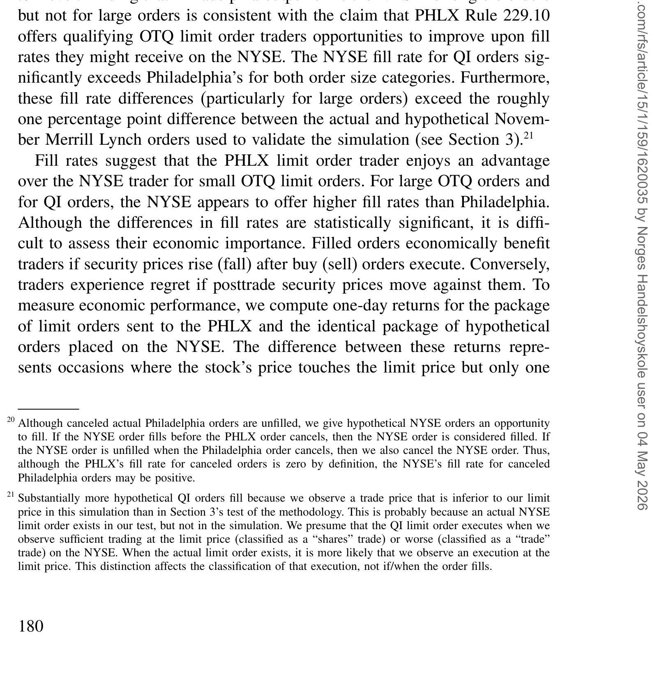
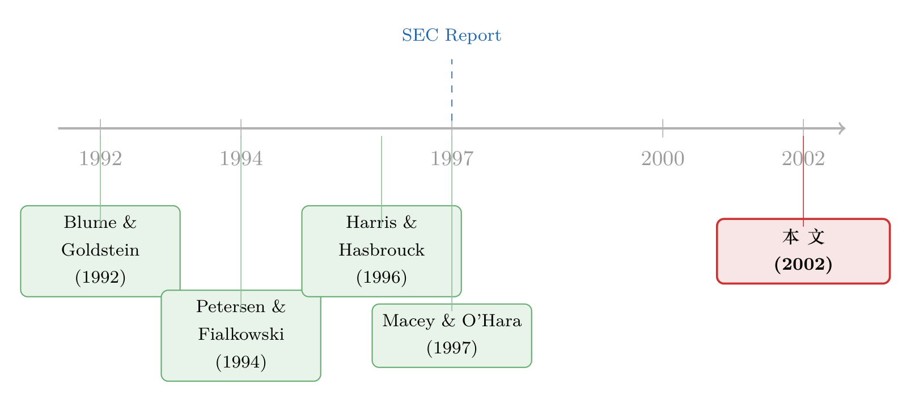

你的挂单去了哪个交易所，真的不要紧吗？
本文读的是 Battalio, Greene, Hatch & Jennings (2002, Review of Financial Studies)：散户的限价单被送到地方交易所还是纽交所（NYSE），无条件地看几乎没差别——这容易让人下结论说"路由无所谓"；可一旦按"限价离行情多远"分组，差别立刻清晰起来——贴着买卖价的单子在地方所成交更勤、更快，而改善报价的单子在 NYSE 更划算。于是结论反转：经纪商完全可以靠"看单子下菜"的策略路由，实打实地改善客户的限价单执行质量。
1 引言：被研究遗忘的那"另一半"
先讲一个几乎所有市场微观结构研究者都同意的"常识"：对于市价单 (market order)，纽约证券交易所提供的执行价格是最好的。这不是一句口号，而是一长串实证文献近乎一致的结论——从 Blume and Goldstein (1992)、Lee (1993)、Petersen and Fialkowski (1994)，到 Bessembinder and Kaufman (1997)，再到 SEC (1997)，大家反复验证、口径出奇地齐。
然而，散户下的单子里，市价单只是一半。限价单 (limit order) 通常占了一个经纪商订单流的一多半。奇怪的是，关于"把限价单送到哪个交易所更好"这件事，文献却出奇地稀薄——在本文作者写作之时，唯一一篇跨市场比较限价单执行质量的研究，是 SEC (1997)。
这就埋下了本文的第一重张力：监管要求经纪商对执行质量做"定期而严格"的评估，可一旦轮到限价单，他们要么干脆忽略，要么只能把"限价单在各交易所之间的分布"当成既定事实、当成外生的。换句话说——限价单该送去哪，从来没有人认真回答过。
本文的问题就这么朴素：
决定把限价单从 NYSE"改道"送往地方交易所（波士顿、辛辛那提、太平洋、费城），到底要不要紧？
2 张力：无条件比较，几乎是个陷阱
首先，一个最自然的做法，是把各交易所的限价单成交率直接摆出来比。我们来看一眼描述性统计（如表 1 所示）。

Table 1: summarizes our data sources and provides descriptive statistics of
要求一笔单子全部成交才算"成交"，那么各家的成交率是：费城（PHLX）66.12%、辛辛那提（CSE）50.19%、波士顿（BSE）62.96%、太平洋（PCX）63.33%，而 NYSE 是 55.92%（10 月）和 56.12%（11 月）。乍一看，地方交易所普遍比 NYSE 高出一截（波士顿在 .05、费城与太平洋在 .01 水平上显著），SEC (1997) 也有类似发现。
但这里藏着一个陷阱。接着，一个自然的问题是：这些单子真的可比吗？
不可比。NYSE 上单子的平均规模（2,576 股）显著大于地方所（费城 650 股、辛辛那提 774 股）——而本文要求"全部股数成交"才算 filled，大单天然更难凑齐。更要命的是 Panel C 揭示的一件事：辛辛那提的限价单价格离行情更远。费城和美林的单子里，有 69% 是改善报价或贴着报价的（QI 或 OTQ）；可在辛辛那提，这个比例只有 48%。这正好解释了那个谜——为什么辛辛那提在大多数价格档位上成交率都不差，整体成交率却垫底？因为它的单子结构本身就偏"远"。
于是第一课就来了：无条件地横向比较成交率，几乎注定会误导。 你看到的差别，可能全是单子结构和市场环境的差别，而不是交易所本身的差别。
3 识别策略（一）：美林的一次"自然实验"
要剥掉这些干扰，本文用了两套互补的办法。
第一套，是一次现成的自然实验 (natural experiment)。1995 年 10 月 20 日，《华尔街日报》报道，美林证券（Merrill Lynch）将停止把纽交所、美交所上市股票的小额散户单子，常规性地送往与美林关联的地方专家。在此之前，美林把它做太平洋交易所专家的那些股票的单子送往 PCX、其余送往 BSE——前者赚有效半价差，后者收订单流付款。10 月 31 日收盘后，所有受影响股票的单子（市价单和限价单）都改送 NYSE，除非地方所报出了更好的价。
这就给了我们一组干净的对照：同一家券商、同一批客户、同一批股票，只有"送去哪"变了。10 月的单子去地方所，11 月的单子去纽约。改道是彻底的——样本里 11 月没有一笔限价单流向地方所。改道前，波士顿接了美林限价单的 20%、太平洋接了 24%，剩下约 56% 归 NYSE。
本文用这 3,467 笔受影响股票的非市价化日内限价单做事件研究，分成互斥的"波士顿样本"（1,528 笔）和"太平洋样本"。前提假设很关键：订单提交策略和市场环境不随时间变化——只要这条成立，10 月 vs 11 月的对比就直指"地方所 vs NYSE"的相对执行质量。
但真正关键的一步，是承认这条假设的脆弱：跨时间比较，终究无法完全排除"这两个月里市场本身变了"的可能。自然实验范围太窄，结论难以推广。所以本文还需要第二套办法。
4 识别策略（二）：把 NYSE 原地"复制"一份
第二套办法，是本文最漂亮的设计：模拟 (simulation)。
思路是这样的：对每一笔真实送到地方所的限价单，我们在完全相同的时刻，"提交"一笔一模一样的、假想的 NYSE 限价单，然后比较这对孪生单子的执行结果。
更准确地说，本文构造了一个"虚拟交易所"——它显示与 NYSE 完全相同的报价和报价深度、接收与 NYSE 完全相同的订单流，但严格执行时间优先 (time priority)、且没有任何隐藏的交易意图。为什么要这样构造？因为真实的 NYSE 允许偏离时间优先，场内"人群"（crowd）也可能选择不暴露自己的交易兴趣。本文要问的恰恰是：如果一笔单子真的去了纽约，按纽约的规则，它会怎样？
这套方法的妙处在于：它在构造上就同时控住了市场环境和订单提交策略——因为两笔单子在同一时刻、面对同一组报价。这正是无条件比较做不到的事。
那它准不准？本文做了校验：对样本中真实的 NYSE 限价单，模拟正确地把超过 97% 的单子分类为"成交/未成交"，并且对执行时间的估计平均而言相当准确。这是后续所有结论的地基。
（顺带一提，"挂单到底要等多久才成交"本身就是个难题——用"股价碰一下限价"来近似成交是会出错的，关于这一点可参见《挂单要等多久才成交？——别再用「股价碰一下」来糊弄自己》。本文的模拟正是绕开了这种粗糙近似。）
5 三把尺子，与"经济表现"那一把
有了对照，还得有度量。本文从三个维度刻画限价单的执行质量：
- 成交频率——单子最终成交的概率；
- 成交速度——已成交单子从提交到成交的等待时间；
- 经济表现 (economic performance)——这是最容易被忽略、却最要命的一把尺子。
为什么需要第三把尺子？设想两个交易所成交率一模一样，但一个总是在"对你有利"的时候才不成交、另一个总是在"对你不利"的时候才不成交——它们的成交率相同，给投资者带来的价值却天差地别。一笔限价单没能成交，是有机会成本的：你本来想在 $30 买入，没买到，股价随后涨到 $31，那 $1 就是你为"没成交"付出的代价。
为把成交率差异翻译成真金白银，本文在第 4 节专门构造了一个经济表现度量，用来给"两个交易所之间成交率的差别"标价——核心就是计算未成交单子的机会成本：那些在 NYSE 没能成交、却本可以在地方所成交（或反之）的单子，事后看，错过的执行到底是赚了还是亏了。
这一步是本文从"描述"走向"判断"的转折。光说"地方所成交率更高"还不够；只有把没成交的那些单子的事后盈亏算出来，才能回答"投资者到底吃亏没有"。
6 反转：一条件化，路由就突然重要起来
现在，把三套工具合在一起，反转出现了。
无条件地看，地方所与 NYSE 的限价单执行质量差别其实很小——小到让你几乎想说一句"路由无所谓，散户不必操心"。这是本文摘要里诚实承认的第一层结论。
但真正关键的一步，是按"限价离当时行情有多远"把单子分组——也就是区分贴价单 (on-the-quote, OTQ)（买在最优买价、卖在最优卖价）和改善报价单 (quote-improving, QI)（限价落在买卖价之间）。一条件化，系统性的差别立刻浮出水面，而且方向相反：
- 对 OTQ 单：地方所成交得更勤、更快。Panel C 里，OTQ 成交率费城
78.10%、辛辛那提72.92%、太平洋68.67%，而 NYSE 只有64.25%（10 月）和58.68%（11 月）。本文进一步发现，把 OTQ 单送去 NYSE 而错失的执行，其机会成本是正的——也就是说，送去纽约，投资者真的吃了亏。 - 对 QI 单：反过来，NYSE 更快、更勤、从投资者角度看也更划算。Panel C 里 QI 成交率 NYSE 高达
93.42%（10 月）、93.05%（11 月），而费城是89.21%。
（这里和 SEC (1997) 有个有趣的出入：SEC 发现 NYSE 的 QI 成交率不占优，本文却发现 NYSE 在 QI 上成交率最高——本文把这归因于自己的样本只含最活跃的 NYSE 上市股票。同时，本文 NYSE 的 OTQ 成交率 58.68%–64.25% 也远高于 SEC (1997) 报告的 45.5%。）
模拟方法在费城、辛辛那提、波士顿、太平洋四套数据上逐一复现了这个图景（费城样本如表 6 所示）。

Table 6: reports fill rates and waits and performance measures for the
于是核心结论水落石出：路由决定本身不要紧，"会不会看单子下菜"才要紧。 经纪商只要愿意根据限价与当时报价的关系来路由，并且对同一只股票把单子分送到不同市场中心——OTQ 送地方所、QI 送纽约——就能实打实地改善客户的限价单执行质量。
这背后其实有一条更深的微观结构逻辑：限价单的执行质量，取决于它前面排了多长的队，以及有多少市价单来和它对手成交。不同交易所的"市价单/限价单"配比不同，又因为美国市场没有跨市场的时间优先（没有中央限价订单簿），路由就有了真实的后果——同一笔单子，送到一个"队短、对手多"的市场，命运就是不一样。Macey and O'Hara (1997) 早就指出，订单流市场里的摩擦（内部化、订单流付款）会让限价单执行质量在市场间出现系统差异；而 Manning 规则（SEC Release 34-34753）规定散户限价单优先于做市商自营，又让外人有机会与这些"被俘获"的订单流成交。本文做的，正是把这套"理论上可能"坐实成了"经验上确实"。
别误读成"地方所更好"。本文的命题是条件性的：地方所对一类单子更好、NYSE 对另一类更好。把所有单子无差别地塞给任何一家，都不是最优。
关于"订单送去小交易所到底亏不亏""为订单流付费如何影响你的成交"，本博客另有几篇可对照阅读：《你的单子被卖去了「小交易所」，你该不该担心？》、《为你的订单付钱，结果你却付了更多》，以及把"抢同一笔单子"写成竞争的《两个交易所抢同一笔单子，谁能活下来，竟系于一条「平局怎么算」的规矩》。
7 数据
本文的"原料"是各交易所的订单审计追踪 (order audit trail) 数据，含证券代码、订单类型、提交日期与时间、规模与价格、买卖方向、有效期、是否撤单，以及成交单的成交时间、规模与价格。观测单位是单笔非市价化限价单。
三套来源、样本期各异：
- 费城（PHLX）：1995 年 11 月 1 日 – 1996 年 1 月 31 日，筛后
43,033笔； - 辛辛那提（CSE）：1997 年 1 月 20–24 日，筛后
11,798笔； - 美林（Merrill Lynch）：1995 年 10–11 月（地方所数据手工誊自纸质报告，仅限若干天），筛后
3,467笔。
报价基准来自 TAQ 文件，用订单到达前最后一条报价构造全国最优买卖报价（NBBO），并要求报价有效（买卖价非零、NBB < NBO、价差小于 $5.00）。筛选包括：剔除小于 100 股的零股、剔除"撤销前有效"（GTC）单、剔除市价化单（为与只含非市价化单的 PHLX 数据对齐）。美林地方所数据只精确到"分钟"，所以还额外剔除了报价在该分钟内变动的单子——这把美林的"无效报价"剔除率推高到 30% 以上，而费城、辛辛那提分别只有 4.5% 和 7.9%。
一个诚实的局限：三套数据样本期不同，本文无法完全区分"相对执行质量的差异"究竟来自交易所之别、还是来自时间趋势。但因为研究关心的是"地方所 vs NYSE"、而非"地方所互相比"，加上模拟把对照锁定在同一时刻，这个隐患被压到了最小。
8 文献脉络
把镜头拉远，本文恰好坐在两条研究线的交叉口。
一条线是市价单的跨市场执行质量：Blume and Goldstein (1992) 开了横向比较的头，Lee (1993)、Petersen and Fialkowski (1994)、Bessembinder and Kaufman (1997) 接力，结论高度一致——NYSE 的市价单执行价格更优。这条线热闹得近乎"定案"。
另一条线却冷清得多——限价单。Harris and Hasbrouck (1996) 用 SuperDOT 数据比较了 NYSE 内部的限价单与市价单的经济表现，但不做跨市场比较；SEC (1997) 是唯一一篇跨市场记录限价单成交率、等待与价格走势的研究，却把路由选择当成外生既定。理论一侧，Macey and O'Hara (1997) 论证了订单流市场的摩擦会带来跨市场的执行质量差异，为"路由可能要紧"提供了机制。

本文的位置因此很清楚：它接住了 SEC (1997) 留下的那个未答之问——"如果这些地方所的单子改送纽约，会不会反而更好？"——并用一次自然实验加一套构造性的模拟，把"路由要不要紧"从外生假设变成了可检验、且条件性成立的实证结论。
评论与延伸（Q&A + 研究方向）
Q：无条件差别"很小"，本文凭什么说路由"要紧"？这是不是自相矛盾？
不矛盾，关键在"条件化"。无条件比较把 OTQ 和 QI 两类方向相反的差异平均掉了，自然显得很小。一旦分组，OTQ 偏向地方所、QI 偏向 NYSE 的系统差异就显现。本文的命题始终是条件性的：差异存在于"哪类单子去哪"，而非"哪家交易所整体更好"。
Q：模拟里那个"虚拟 NYSE"严格执行时间优先、没有隐藏意图，可真实 NYSE 并非如此。这会不会让对照失真？
这是有意为之，也是最该盯住的假设。真实 NYSE 允许偏离时间优先、场内人群可隐藏兴趣，这些通常有利于成交。所以本文的"虚拟 NYSE"更像一个保守基准——它可能低估了真实 NYSE 的成交能力。本文用
97%以上的分类正确率来论证这套近似在样本里站得住，但读者应记得：结论对地方所是相对偏友好的。
Q：自然实验和模拟，哪个更可信？
两者互补。自然实验"干净"在同一券商同一批股票，弱点是跨时间、范围窄、无法排除两个月间市场本身变化。模拟"干净"在同一时刻控住了环境与策略，弱点是依赖"虚拟 NYSE"的构造假设。两套方法指向同一结论，可信度因而互相加固。
Q：要求"全部股数成交才算 filled"，会不会人为压低了大单的成交率，从而夸大地方所的优势？
会有这个方向的影响，本文也明说了：NYSE 平均单子规模
2,576股远大于地方所，全额成交的口径对大单不利。但这正是为何要用模拟——同一笔单子的孪生对照用同一口径，规模偏差被差分掉了。无条件的 Panel B 才是受这个口径影响最大的地方。
Q：样本是 1995–1997 年的人工市场、还有 1/8 美元的报价档（tick）。在十进制报价、电子化、Reg NMS 之后，结论还成立吗？
这是最大的外部效度问题。当时美国没有跨市场时间优先，路由后果才显著；十进制化、自动执行和后来的监管把摩擦结构改了不少。本文的具体量级几乎肯定已经过时，但它的方法论与核心洞见——"条件化才能看见路由的价值""未成交单子的机会成本必须计价"——是跨制度的。
Q：既然 OTQ 送地方所、QI 送纽约更优，为什么经纪商没有早就这么做？
因为存在利益冲突。订单流付款和内部化让券商有动机按"谁付钱"而非"谁执行得好"来路由；而且券商怕"市价单送一处、限价单送另一处"会招来监管注意，往往按订单规模整体选一个目的地。本文的贡献，正是把"客户利益"与"券商动机"这两种可能掰开，证明策略路由的改善空间是真实存在的。
几个可能的研究问题与提案
-
把同一套"条件化 + 机会成本"框架搬到公司债市场。 【经济故事】公司债以场外（OTC）、交易商网络为主，"把单子询给哪个交易商"几乎就是债市版的路由决策；而限价单式的挂单在电子平台（如 MarketAxess）日益普遍。债市流动性差、未成交的机会成本可能比股票更大。 【可行性】中。TRACE 加上电子平台的询价/成交数据可识别"询了谁、成没成"，但债市缺少股市那样干净的 NBBO 基准，"虚拟对照交易商"难构造，识别要靠交易商固定效应或询价竞价结构。
-
外资持有人会改变限价单的最优路由吗？ 【经济故事】外资订单常被认为信息含量与交易动机不同（更被动、更耐心）。若不同投资者类型对"队列长短/对手供给"的敏感度不同，那么"哪类单子该去哪"的最优策略可能因投资者身份而异。 【可行性】中偏低。需要能识别下单方国籍的订单级数据（如韩国 KRX 的交易簿），可与《外资真有「信息劣势」吗？——首尔交易簿里那 37 个基点的真相》一类数据对接；难点在把"路由选择"从"投资者自选"中剥离。
-
十进制化 / Reg NMS 之后，路由的"条件价值"还剩多少？ 【经济故事】本文的前提是没有跨市场时间优先。十进制报价压缩了价差、自动路由和 Reg NMS 的订单保护规则改变了摩擦结构。一个直接的复制研究：用现代数据重估 OTQ/QI 的跨场所差异，看"条件价值"是被抹平还是只是搬了家。 【可行性】高。现代有大量交易所/ATS 层面的成交质量数据（Rule 605/606 报告、TAQ），方法几乎可以照搬，是一个干净的"旧问题新数据"题目。
-
把"未成交单子的机会成本"做成一个可交易的执行质量指标。 【经济故事】本文的经济表现度量本质上是事后机会成本。若能把它实时化、做成对各路由目的地的预期机会成本评分，就能直接服务于最优路由算法与"最佳执行"合规。 【可行性】中。需要高频报价与成交数据估计条件成交概率与事后价格漂移；识别上要小心"路由本身影响后续价格"的反身性。
参考文献
- Battalio, R., Greene, J., Hatch, B., and Jennings, R. (2002). Does the Limit Order Routing Decision Matter? Review of Financial Studies 15(1), 159–194.
- Blume, M., and Goldstein, M. (1992). Differences in Execution Prices Among the NYSE, the Regionals, and the NASD. Working Paper 4-92, University of Pennsylvania.
- Lee, C. (1993). Market Integration and Price Execution for NYSE-Listed Securities. Journal of Finance 48, 1009–1038.
- Petersen, M., and Fialkowski, D. (1994). Posted Versus Effective Spreads: Good Prices or Bad Quotes? Journal of Financial Economics 35, 269–292.
- Bessembinder, H., and Kaufman, H. (1997). A Cross-Exchange Comparison of Execution Costs and Information Flows for NYSE-listed Stocks. Journal of Financial Economics 46, 293–319.
- Harris, L., and Hasbrouck, J. (1996). Market vs. Limit Orders: The SuperDOT Evidence on Order Submission Strategy. Journal of Financial and Quantitative Analysis 31, 213–232.
- Macey, J., and O'Hara, M. (1997). The Law and Economics of Best Execution. Journal of Financial Intermediation 6, 188–223.
- Lo, A., MacKinlay, C., and Zhang, J. (1997). Econometric Models of Limit-Order Executions. Working Paper LFE-1031-97, Massachusetts Institute of Technology.
- SEC (1997). Report on the Practice of Preferencing. SEC, Washington, DC.